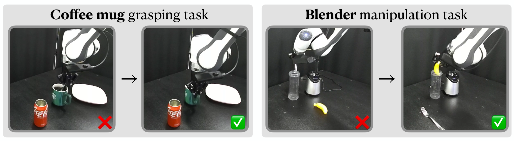

论文笔记：Observing and Controlling Features in Vision-Language-Action Models
论文笔记：Observing and Controlling Features in Vision-Language-Action Models
1. 背景信息与核心判断
Stanford / NVIDIA Research；首次提交于 2026-03-05，本笔记依据 2026-09-21 更新的 v2。按 arXiv 预印本记录，未核实会议录用信息。材料为官方全文（§I–VI、图表及参考文献），未运行代码或复现实验。第二版已有四模型比较与真实机器人实验，不能沿用仅覆盖早期仿真实验的介绍。
值得记住的四点：
- 冻结 VLA 后，线性探针能读出状态及动作信息；状态通常比动作更容易读出，但这还不是行为控制证据。
- 真正有用的设计是按当前样本计算最小干预量：已满足目标就不动，未满足才沿探针方向推到边界。
- 闭环实验不仅改变运动幅度，也改变抓取方式和目标物体选择；任务成功与偏好满足被分开评价。
- 严格成立的是探针输出的区间约束，机器人行为只获得经验性改善。 我认为它更适合作为低成本偏好接口，而非带安全保证的控制器。
2. 关键问题：杯子抓起来了，但夹爪伸进了咖啡
Golden Case（§V-C、Figure 7）：让真实机器人抓取盛有咖啡的杯子，基础策略常夹住杯沿，导致一根夹爪进入液体。机器人完成了“抓起杯子”，却违反了用户希望抓杯柄的偏好。增加语言提示只能部分纠正这个问题。

原文 Figure 7，来源：作者论文，CC BY 4.0。左侧应关注接触部位：两种方式都能抓杯，但只有杯柄符合这里的偏好；右侧是目标物体身份变化，不能仅靠裁剪某一动作坐标表达。图片展示行为类型，统计证据见下文表格。
困难在于：偏好不一定能通过语言接口稳定调用，微调又需要额外训练；直接覆盖动作可能打断策略原有的反馈与动作协调。尤其在 π 系列里，VLM 表征还要经过 flow-matching 动作专家，读出一个方向并不意味着它能穿过后续模块、持续改变闭环行为。
论文把问题拆开：信息是否可读出 → 沿该方向干预是否改变输出 → 多步执行是否满足偏好且完成任务。 这三个问题分别由 §V-A、V-B、V-C 回答。
3. 关键方法：读出当前倾向，只补足到目标边界所需的改变量

来源：原文 Figure 1。先用观测器估计内部特征，再用加性控制器修改表示。图里的闭环连接说明控制发生在策略内部，而不是在动作输出后单独做避障。
沿抓杯柄案例走一遍
离线准备。 收集基础策略的 rollout、内部激活和目标特征标签；对于抓杯任务，目标是区分抓取方式。冻结 VLA，逐层训练监督线性 observer（观测器）。连续量用均方误差，离散量用交叉熵。§V-C 说明复用 50 条基础策略 rollout 拟合 observer；“无需微调”指无需更新 VLA，不等于无需标签或训练探针。
在线执行。 图像、指令和模型支持的本体状态照常进入 VLA。在选定层把 token 激活做均值池化，读出目标特征的当前预测。如果预测未满足指定目标，就计算扰动并广播加到该层所有 token 上；后续模型继续生成动作。执行后获得新观测，再重复这一过程（Algorithm 2）。因此动作仍由原策略生成，干预作用于生成条件。
对于杯柄这一离散特征，理解流程可以用“把杯柄倾向推过目标阈值”作直觉；但原文没有充分交代这个任务具体使用哪层、类别分数阈值与干预时段，不能把直觉补成复现参数。下面的闭式公式严格对应论文明确给出的标量仿射 observer；带单调非线性的分类读出需要在相应分数空间处理目标。
为什么是这个方向、这个幅度？
令第 $\ell$ 层全部 token 表征为 $X_\ell\in\mathbb R^{N\times d}$，池化后为 $x_\ell$。对一个标量特征，读出为（Eq. 2–3）：
$W_\ell$ 是训练所得方向，$b_\ell$ 是偏置；目标可以是动作位移，也可以是有标签的行为属性。给定目标区间 $\mathcal C=[\xi_{\min},\xi_{\max}]$，求（Eq. 6）：
将 Eq. 7 等价写成一行，当 $W_\ell\ne0$ 时：
直觉是：只沿能改变 observer 的方向移动，幅度等于“距离最近合法边界还差多少”。与 $W_\ell$ 正交的移动不改变线性读出，却会增加扰动范数，因此最优解不需要它。预测已经在区间内时 $u_\ell=0$。
为什么给所有 token 加同一个向量？在均值必须移动 $u$ 的条件下，均匀广播是 token 矩阵 Frobenius 范数最小的实现，其平方范数为 $N\|u\|_2^2$（Proposition IV.1）。这给出了明确的几何最小性，但没有证明它最少损害所有下游能力。
固定的 $\alpha W$ 会给每个样本的预测加上同一个偏移，只能整体平移预测分布；均值合规时，尾部样本仍可能违规。本文按样本误差决定幅度，解决的是这个问题（Figure 5）。其闭式控制思路承接 LiSeCo（原文参考文献 [3]），贡献主要是 VLA 的观测—干预—闭环验证，而非首次发明这条投影公式。
哪个“保证”真正成立？
代回公式可知 $f_\ell(x_\ell+u_\ell)\in\mathcal C$，这是对当前 observer 输出的保证。它不能推出整段机器人轨迹的 $\xi(\tilde\tau)\in\mathcal C$：后续网络可能改变信息，探针在干预分布上可能失准，动作执行与时间演化也会引入偏差。
§III-B 的可观测性、可控性是理想化定义，要求同一映射对所考虑输入集合成立；作者明确说实验只提供有程度差别的证据。这里并未证明经典控制理论意义上的全局可控系统，也未给出物理安全证书。
4. 数据与评估：四模型读出，π₀.₅ 闭环验证
| 实验层次 | 模型与资料 | 关键评估约定 |
|---|---|---|
| 线性可读出性 | π₀、π₀-FAST、π₀.₅：LIBERO 与 DROID；OpenVLA：BridgeData V2 | 每层每特征训练探针，留出 10%，报告各特征最佳层 |
| 输出对干预的响应 | 重点比较 LIBERO 的 π₀ 与 π₀-FAST | 50 个 episode；每次只干预一层，扫描层与强度 |
| 闭环行为 | 冻结 π₀.₅，LIBERO 仿真及 DROID 实机 | 仿真实验各 100 rollouts；三个实机任务每方法各 50 rollouts |
读出的状态为位置、姿态、夹爪开合；动作标签为平移、旋转、夹爪指令。动作块标签取块内均值，OpenVLA 用单步标签。探针只分析 VLM prefix，不分析混合模型的动作专家；自回归模型取开始生成动作 token 之前的第一次前向激活（§V-A）。
有两个比较边界：OpenVLA 没有本体状态输入，且使用不同数据集；不能把它与 π 系列的分数差全部归因于架构。另一个是原文只写 10% 留出，未明确按 episode 还是帧划分、以及选层是否使用独立验证集；因此不能直接把 Figure 3 当作跨轨迹、跨任务泛化结果。
5. 关键结果：偏好可明显改变，效果依赖约束类型
可读出性与输出干预分别说明什么？
Figure 3 中，位置状态的最佳层 $R^2$ 为 0.81–1.00，姿态为 0.53–0.99；动作读出更弱。π₀.₅ 的连续特征平均可读出性最好，但二元夹爪特征并非如此。作者报告 LIBERO 到 DROID 的动作可读出性约降三分之一，状态基本不变（§V-A）。这与真实遥操作动作更复杂、更嘈杂相容，不能仅凭此断言真实模型的内部结构更不线性。
Figure 4 改用干预检验：在 π₀ 和 π₀-FAST 内沿动作 observer 方向加扰动，随着强度增加，连续动作的平均输出变化总体有序；夹爪这种离散输出不如连续量规则。它支持方向具有行为效力，尚不证明每个样本都单调响应，也没有排除同时改变其他行为的可能。
最有说服力的是抓取方式，而不是“又提高了成功率”
以下都是符合指定偏好的比例，不是统一的任务成功率（Tables I–II）：
| 方法 | 酒瓶抓底部，仿真 | 咖啡杯抓柄，实机 | 搅拌机选香蕉，实机 | 烤箱选玻璃碗，实机 |
|---|---|---|---|---|
| 原始 π₀.₅ | 28% | 14% | 52% | 48% |
| Prompting | 40% | 46% | 40% | 62% |
| Value vectors | 3% | 38% | 64% | 94% |
| 本文控制器 | 73% | 74% | 100% | 100% |
回到杯子案例：所有方法都能抓杯，本文改变的是怎么抓。杯柄偏好相对基础策略提高 60 个百分点，超过提示词和 value-vector baseline，但仍有 26% 不符合偏好。酒瓶实验也有剩余失败；仿真提示词结果采用两个提示中的较优者（§V-C）。
选物实验每项各 50 次均选到作者指定的安全物体，但任务成功仅表示成功操作选中的物体，没有评估完整搅拌或烤箱任务。这里的物体安全性也是预先指定标签，不能外推为模型获得通用安全判断能力。
简单几何约束未必需要改内部表征
搬运阶段的抬升约束分别是上界 0.10 m、下界 0.20 m；Figure 6 在 LIBERO-Spatial 的 10 个任务上各跑 10 次，同时看约束满足和任务成功。作者报告本文能明显改善约束满足并保留较高任务成功，action clipping 也表现良好（§V-C）。所以不能据此说内部控制全面优于输出端约束。
拒绝采样将预算从 $K=5$ 加到 $100$，两类约束满足仍低于 10%；value vectors 对上界约 74%，下界为 0%。单卡 RTX 5090 上测 50 次前向，拒绝采样两档中位推理开销分别增加 16% 和 583%，本文约增加 1%。这是该设置的前向开销，不能直接等同完整机器人系统的端到端延迟。
还要注意一个工程细节：下界约束需要 4 cm 提前纠偏裕量，以应对单步位移有限、达到要求需要时间的问题。这说明隐空间投影仍需配合物理执行的时间尺度；它不是免调参的瞬时行为保证。
6. Insights：下一步应检验什么？
① 应优先检查干预后的探针校准，而不是继续追求更高的离线 $R^2$。 Figure 5 的区间满足由公式保证，Table I 却仍出现不符合偏好的 rollout。中间缺的是“被干预表征上的预测与实际行为是否一致”。我会按干预幅度、任务阶段分别画预测—行为校准曲线，并在独立 rollout 上测量；这能区分读出失准、干预过晚与后续网络抵消三种失败。
② 本文的优势更可能出现在动作裁剪难以表达的偏好上。 抬升约束可直接定义于动作空间，clipping 已经有效；“抓柄而非杯沿”或“选香蕉而非叉子”则牵涉动作生成前的选择。值得复现的是同一任务中比较“几何约束交给输出端、语义偏好交给表征端”的组合，检查偏好收益是否保留以及两类干预是否冲突。
③ 最小表征扰动不是最小行为副作用。 均值广播的最优性依赖欧氏范数，而后续动作专家对各方向的敏感性不同。小范数仍可能改变抓取之外的轨迹属性。我会加入同范数随机方向对照，并同时报告目标偏好、非目标动作变化和任务成功；这比仅证明目标输出随强度变化更能支持“保留原策略能力”。
7. 连接与发现
- MOC-VLA — Topic：在已有策略之上加入可监督的内部偏好接口，并分别评估任务成功和约束满足。
- Sparse-Autoencoders-Reveal-Interpretable-and-Steerable-Features-in-VLA-Models-稀疏特征与因果操控 — 两者都干预内部表征；SAE 工作先无监督发现方向，本文先指定目标并训练读出器，适合比较“发现行为结构”和“控制已知偏好”的不同证据要求。